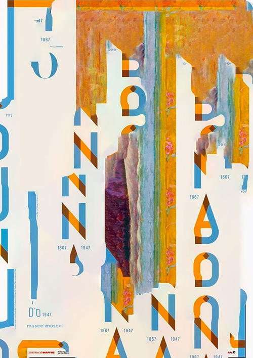

ERROR 404
Ce projet, Erreur 404, vise à prendre connaissance et faire valoir l’aspect positif de l’erreur. Il s’agit de détourner des visuels et jouer à introduire l’erreur à partir d’un outil aléatoire sur le logiciel Photoshop. J’ai donc téléchargé des images libres de droits de toutes origines, et les ai modifiées jusqu’à en obtenir un paysage hasardeux. Ainsi, j’ai pu, au fur et à mesure, minimiser mon appréhension vis-à-vis de cette notion d’erreur. J’ai conçu un fanzine, petite publication fortement ancrée dans la philosophie DIY. J’ai composé les doubles pages en cherchant les concordances de couleurs, de mouvement et en tentant de rapprocher des visuels débordant d’informations à d’autres moins bavards.
